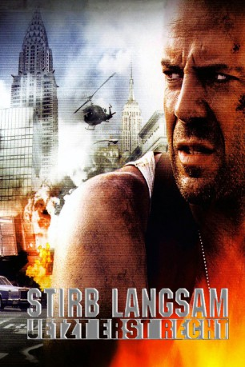
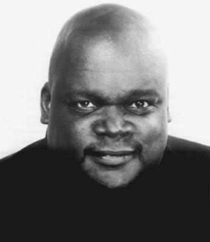

#428 Stirb langsam 3 - Jetzt erst recht
Alternativ: Die Hard with a Vengeance
 
 IMDB-Wertung: 7.6 / 10
IMDB-Wertung: 7.6 / 10  Metascore: 58
Metascore: 58 
John McClane ist es gewohnt, dass ihm das Schicksal übel mitspielt, doch nun ist er wirklich am Ende: Seine Frau hat ihn verlassen, sein Boss hat ihn suspendiert und ein Irrer namens Simon macht sich einen Spaß daraus, ihn auf eine makabere Schnitzeljagd quer durch New York zu schicken. Der Terrorist droht damit, eine Schule in die Luft zu jagen, sollte McClane seine Rätsel nicht lösen könne. Seine erste Aufgabe führt ihn ins Ghetto von Harlem, wo er sich mit einem Schild mit der Aufschrift "I hate niggers" präsentieren soll. Bei den Anwohnern erntet er damit erwartungsgemäß keinen Beifall, sondern gerät postwendend in Bedrängnis. Der schwarze Ladenbesitzer Zeus kommt dem Polizisten zur Hilfe und wird McClane kurzerhand als unfreiwilliger Helfer zur Seite gestellt. Simon hat seine helle Freude daran, die Partner wider Willen durch die Stadt zu hetzen und ihnen unmögliche Aufgaben zu stellen...
Jahr: 1995
Dauer: 131 Minuten
FSK: 16
Land: USA Studio: 20th Century FoxTonspuren:
Untertitel: Deutsch,
Auflösung: 1080p (1920x816) Größe: 11878 MB
Genre: Action, Abenteuer, Thriller
Regisseur:  John McTiernan
John McTiernan
Drehbuch: Jonathan Hensleigh, Roderick Thorp
Soundtrack: Michael Kamen
Darsteller:
 Bruce Willis als John McClane
Bruce Willis als John McClane Jeremy Irons als Simon Gruber
Jeremy Irons als Simon Gruber Samuel L. Jackson als Zeus Carver
Samuel L. Jackson als Zeus Carver Graham Greene als Joe Lambert
Graham Greene als Joe Lambert Colleen Camp als Connie Kowalski
Colleen Camp als Connie Kowalski- Larry Bryggman als Insp. Walter Cobb
- Sam Phillips als Katya
 Kevin Chamberlin als Charles Weiss
Kevin Chamberlin als Charles Weiss Sharon Washington als Officer Jane
Sharon Washington als Officer Jane Aldis Hodge als Raymond
Aldis Hodge als Raymond Edwin Hodge als Dexter's Friend
Edwin Hodge als Dexter's Friend- Robert Sedgwick als Rolf
- Anthony Thomas als Gang Member #1
- Glenn Herman als Gang Member #2
- Kent Faulcon als Gang Member #3
- Andre Ware als Gang Member #7
- Michael Lee Merrins als Van Driver
 Daryl Edwards als Livery Driver
Daryl Edwards als Livery Driver Aasif Mandvi als Arab Cabbie
Aasif Mandvi als Arab Cabbie- Bill Kux als Businessman in Taxi
 Scott Nicholson als Transit Cop
Scott Nicholson als Transit Cop Charles Dumas als FBI Agent Andy Cross
Charles Dumas als FBI Agent Andy Cross Michael Cristofer als Bill Jarvis, from Another Organization
Michael Cristofer als Bill Jarvis, from Another Organization- Phyllis Yvonne Stickney als Wanda Shepard
- Michael Tadross als Greek Deli Proprietor
- Elvis Duran als Radio D.J.
 Timothy Adams als Gunther
Timothy Adams als Gunther- John C. Vennema als Felix Little
- Tony Travis als Marshal #1
 James Saito als Korean Proprietor
James Saito als Korean Proprietor- Víctor Rojas als Kid #2
- Joe Zaloom als Jerry Parks
 John Doman als Foreman
John Doman als Foreman- Patricia Mauceri als Miss Thomas
 Gerry Becker als Larry Griffith
Gerry Becker als Larry Griffith Richard Council als Otto
Richard Council als Otto John Hoyt als Federal Reserve Guard #1
John Hoyt als Federal Reserve Guard #1 Alan Rickman als Hans Gruber , archive footage
Alan Rickman als Hans Gruber , archive footage- Steve Altes als Gang Member #9 , uncredited
 Tony Brubaker als Man at Subway Station , uncredited
Tony Brubaker als Man at Subway Station , uncredited-  Vernon Campbell als Large Gang Member , uncredited
 Dick Durock als Man at Subway Station , uncredited
Dick Durock als Man at Subway Station , uncredited Diane Kimbrell als Pedestrian , uncredited
Diane Kimbrell als Pedestrian , uncredited- Kyle Koromaldi als Businessman at Subway Station , uncredited
 Anibal O. Lleras als Train Passenger , uncredited
Anibal O. Lleras als Train Passenger , uncredited- Barbara Maggio als Lisa , uncredited
 Drew Nelson als Kindergarten student , uncredited
Drew Nelson als Kindergarten student , uncredited- Ralph A. Villani als Bomb Squad Detective , uncredited
- Anthony Peck als Ricky Walsh
- Nicholas Wyman als Mathias Targo
Datei: X:\5-Pentalogie(A-Z)\Stirb Langsam\Stirb langsam 3 - Jetzt erst recht (1995, FSK16, 1920x816).mkv seit 21.02.2015
Festplatte: HD Collection-3(N-Z)-6(A-Z)
 Es gibt insgesamt 8 Filme in der Gruppe '5-Pentalogie(A-Z)\Stirb Langsam'
Es gibt insgesamt 8 Filme in der Gruppe '5-Pentalogie(A-Z)\Stirb Langsam'